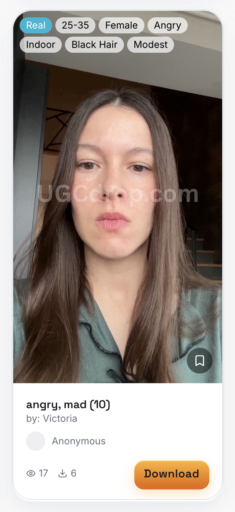

UGC for TikTok Ads: Complete Strategy Guide (2026)
Updated June 2026·11 min read
TL;DR
UGC ads deliver +15% higher CTR and -8% lower CPA than traditional creative on TikTok — because they feel native, not promotional.
In-Feed Ads are the best TikTok format for UGC. Spark Ads (boosting creator posts) cut CPA a further 30–40% by adding social proof.
The fastest way to source TikTok UGC: instant libraries like UGCDrop ($0.93/clip) for testing, creator platforms for scaling winners.
UGC has become the dominant creative format for TikTok advertising. Content that looks like a friend's organic post consistently outperforms polished studio production — not because it's cheaper to make, but because TikTok users have trained themselves to skip anything that looks like an ad. This guide covers everything brands need to build a TikTok UGC ads strategy that performs: what UGC is on TikTok, why it works, which formats convert, how to source it efficiently, and how to scale what's working.
UGCDrop's library — find the right hook video in seconds and download instantly.
What is UGC on TikTok and why does it outperform traditional ads?
In the context of TikTok advertising, UGC (user-generated content) refers to video content that looks like it was created by a real user rather than a brand. This includes organic customer content, commissioned creator videos designed to mimic organic posts, and Spark Ads that amplify genuine user content. The defining characteristic is that it feels native — shot on a phone, unscripted in tone, featuring a real person speaking directly to camera.
+15%
higher CTR for UGC video ads on TikTok versus traditional brand creative — with 8% lower CPA and up to 66% reduction in customer acquisition cost for top-performing UGC campaigns.
TikTok platform data and industry research, 2026. 86% of companies now incorporate UGC into their marketing strategy.
UGC outperforms because of two compounding factors. First, TikTok users have developed a strong mental filter against content that looks promotional — if the first frame signals "ad," most users scroll before the hook even registers. UGC bypasses this filter by blending with organic content in the For You feed. Second, the TikTok algorithm rewards engagement — watch time, comments, shares, saves. UGC naturally generates stronger engagement signals than brand content, which compounds into lower CPM as the algorithm allocates more impressions to high-performing ads.
What are the best TikTok ad formats for UGC in 2026?
In-Feed Ads: The Default Choice
In-Feed Ads appear natively in the For You feed, exactly where organic content lives. Users can like, comment, share, and follow directly from the ad. For UGC, this is the primary format — content that looks organic in the feed gets treated like organic content by the audience, generating the engagement signals that feed the algorithm. Best for 5–60 second videos. The majority of TikTok UGC testing happens through In-Feed Ads.
Spark Ads: The Performance Multiplier
Spark Ads let brands boost existing organic TikTok posts — either from their own account or a creator's account (with authorization). Because Spark Ads preserve the original post's existing engagement (likes, comments, shares), they enter the paid ecosystem with built-in social proof. The result: Spark Ads typically deliver 30–40% lower CPA than standard In-Feed Ads for the same creative concept. The best workflow is to test creative as standard In-Feed Ads first, then convert the winner to a Spark Ad for scaling.
✓
Spark Ad Strategy
When a creator organically posts about your product and it gets strong engagement, request Spark Ad authorization and boost it immediately. Genuine organic content with 500+ likes and real comments delivers social proof that no commissioned content can fully replicate. Commission creators to post organically first, then boost the winners.
What types of UGC perform best as TikTok ads?
Product reviews with genuine first reactions: Unscripted first-use reactions drive high trust. The most effective start with a genuine reaction, cover 2–3 specific product features, and end with a personal recommendation. Imperfect is better than rehearsed.
Problem-solution narratives: "I had [problem] until I found [product]" is a proven arc. Name exact outcomes — not vague life improvement, but a specific before-and-after that the viewer can picture in their own life.
How-to demonstrations: Show the result first, then the steps. Keep under 45 seconds. Address a specific, searchable problem. Strong watch-time signal and high save rate — both of which improve algorithmic distribution.
Before and after: Visual contrast drives immediate curiosity. Use real, unretouched transformations. Pair with a brief voiceover explaining process and timeline — specificity increases trust and conversion rate.
Day-in-the-life featuring product naturally: The product should appear as part of an existing routine, not the sole focus. Brief, specific mentions of why the creator uses it convert better than extended pitch sequences.
How do you source UGC for TikTok ads quickly and affordably?
The fastest sourcing method depends on what you need: generic hook clips for testing, or product-specific custom content for scaling.
Method
Best For
Cost
Turnaround
UGCDrop library
Hook testing, reaction clips, B-roll
$0.93/clip
Instant
Nano influencers (1K–10K followers)
Authentic reviews, niche audiences
$100–500/video
3–7 days
Creator platforms (Billo, Insense)
Managed production, Spark Ads
$50–200/video + platform
7–14 days
Customer incentives
Organic UGC from real buyers
Cost of incentive only
Unpredictable
AI-generated UGC
Script and hook testing at volume
$5–50/video
Minutes
◆
Most Efficient Workflow
Use UGCDrop for initial hook testing (instant, $0.93/clip, zero coordination). Once a hook concept proves out — strong thumb-stop rate, CTR above 1.5% — commission a nano influencer or use a creator platform to build product-specific content around that proven structure. Test cheap, scale what wins. This cuts creative testing costs by 70–80% versus starting with expensive custom production.
How do you scale TikTok UGC ads without burning out your creative?
Creative fatigue is the primary reason TikTok campaigns plateau. When your audience has seen the same ad 5+ times, performance degrades. The solution is systematic creative rotation:
Month 1 — Test: Commission 10–15 UGC creatives from different creators. Test 3+ hook variations per video. Equal budgets ($20–50 per variation) for 48–72 hours each. Identify top 3–5 performing hook angles.
Month 2 — Optimize: Produce 5–10 new variations of proven concepts. Test new audience segments with winning creatives. Scale budget 20–30% every 3–4 days while maintaining target CPA.
Month 3 — Scale: Increase daily spend on proven combinations. Establish ongoing creator relationships (2–4 videos/month per creator). Refresh creative weekly. Begin next testing cycle simultaneously.
"We immediately published the first ad variations with Billo's recommended structure, we didn't edit anything, and it already worked better than our previous ads. Our ROAS was better and acquisition costs went down."
— Jorens Kvele-Kvals, CEO (200% boost in net profit)

UGCDrop's video detail page — preview, filter, and download in one click.
Frequently Asked Questions
Why does UGC outperform traditional ads on TikTok?
UGC outperforms because it blends natively with organic content, bypassing the mental ad filter most TikTok users have developed. Platform data shows UGC delivers +15% higher CTR and -8% lower CPA. The algorithm also favors high-engagement content — UGC generates stronger watch time, comments, and shares, which compounds into lower CPM over time.
What is the best UGC format for TikTok ads in 2026?
In-Feed Ads are the best TikTok format for UGC — content appears natively in the For You feed and blends with organic videos. Spark Ads (boosting existing creator posts) typically deliver 30–40% lower CPA than standard In-Feed Ads because existing engagement signals increase trust. Test as In-Feed first, convert winners to Spark Ads for scaling.
How do you source UGC for TikTok ads quickly?
The fastest method is an instant library like UGCDrop — 100,000+ real human clips downloadable immediately at $0.93 each. For custom product-specific content, creator platforms like Billo or Insense take 7–14 days at $50–200/video. Best practice: test hooks with UGCDrop clips, commission custom content for proven concepts.
How much does TikTok UGC advertising cost?
Creative production: UGCDrop clips at $0.93 each, nano influencer commissions at $100–500/video, creator platform rates at $50–200/video. Media spend: TikTok In-Feed Ads average $5–15 CPM with $500 minimum campaign budget. Top e-commerce UGC campaigns achieve 1–3% CTR and 3–5x ROAS.
What types of UGC perform best as TikTok ads?
The five highest-performing UGC formats on TikTok are: genuine product reviews with first reactions, problem-solution narratives with specific outcomes, how-to demonstrations that show results first, before-and-after transformation content, and day-in-the-life integrations that feature the product naturally rather than as the sole focus.
Source TikTok UGC clips instantly. 100,000+ real human reactions from $0.93 each.
UGCDrop's searchable library lets you find the exact hook clip you need — by emotion, age, gender, or setting — and download it before your next campaign brief is written.